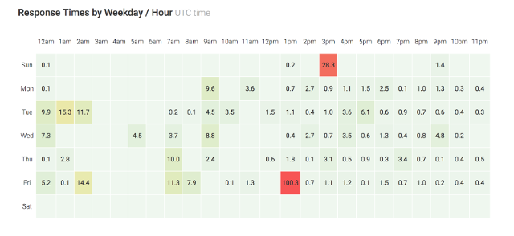
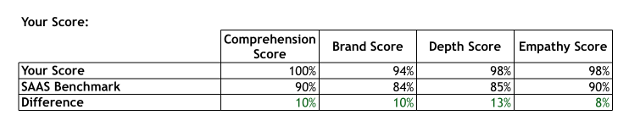

It’s well documented now that most if not all SaaS companies focus on customer success as part of their growth strategy. The best companies use low churn rates and targeted account revenue expansion to create negative churn rates. This means they can significantly increase revenue from their existing client base every year, compounding their overall growth rate.
For example, Zendesk — one of the most successful SaaS companies of the last 10 years— experienced net account expansion of 126% and 123% in 2013 and 2014, which helped them grow year-on-year revenue 88% in 2013 and 76% in 2014.
But what makes great customer support? How high do you set the bar? Do you need to answer every support ticket immediately? How fast do you need to respond? What’s the best way to talk to a customer?
To answer these questions, I thought I’d look at what the best support teams in SaaS are doing. To define the best support teams, I looked up the five best performing SaaS companies according to our free support QA tool. Using this tool, I know which SaaS companies have the highest conversational quality scores relating to comprehension, brand voice, depth of response and empathy.
I then looked for common themes across all five of these companies related to conversational style and support response times. Here’s what I found.
Excellent Response Times during the Workweek. Slower Response Times during the Evenings and Weekends
All of these companies respond to almost all of their daytime inquiries within two hours. Three of the five companies even respond to most tickets within one hour.
After normal working hours though, it’s a different story. Have a look at this distribution of responses times by hour of the day for one company:

Data from Influx support insights
Here, you can clearly see fast response times during the working week, and slower response times in the evenings.
Something to consider, some SaaS companies primarily sell to more executive employees, and these companies seem to have very few tickets on the weekends. Consumer SaaS apps, or SaaS companies with lower price points and who are selling to a relatively large number of customers, tend to have more tickets on the weekends and in the evenings.
How do you provide fast(er) response times? We help with 24/7 support for SaaS.
A Small Subset of Emails often Dramatically Increase Average Response Time Scores
On average, the best SaaS companies have an average response time between two to five hours, which doesn’t sound that great. That’s the default number you’ll see in your help desk for your own response time as well as the number you’ll often see as an industry benchmark.
But, that number isn’t reflective of the overall support experience. Rather, the off-hours tickets are skewing the response time average.
Average response times for the top 95% of tickets is much, much lower.
Near Perfect Comprehension, Conversational Tone and Depth of Response
Our auditing tool assesses all responses based on four quality factors: Comprehension, brand, depth and empathy. What’s interesting is the best SAAS help desks have a near perfect score for comprehension, depth and empathy.
Here’s the score for one of the top performing help desks, compared to a SaaS benchmark.

The best companies always fully understand the problem and elaborate on the solution, while fully understanding the feelings of the customer.
A Few Grammatical Errors are Ok. What You’re Saying Matters More than How You Say It
Almost all of the best performing help desks had a few small grammatical issues, usually around punctuation or tense. This suggests that agents focus on speed and resolving the core issue rather than perfect grammar.
This makes sense, as most SaaS customers are trying to figure out an immediate problem when they create a ticket, the first focus should be on solving the problem as quickly as possible for them.
Responses are Thorough but also Succinct, not too Conversational
All responses are clear, concise and get to the root of the problem quickly. There’s very little conversational padding. Almost all responses start with a quick hello and then start answering the question right away, telling the customer exactly what is happening and why.
Though the responses are succinct, almost all responses still have a simple closing statement such as ‘Hope this helps’ or ‘Let me know if I can help further’. Many of the lower performing help desks often fail to include a light closing statement.
Only Half of Companies Use the Out-of-the-Box Customer Satisfaction Score
Out of our top five SaaS help desks, only two companies had setup CSAT (Customer Satisfaction) tracking, and I’m not sure if they were actively using this data. Rather, they were only tracking this score.
The general consensus when you talk to companies is that CSAT score isn’t reflective of the support experience. Rather, it’s reflective of both the support experience and the product experience. You can’t use CSAT score to isolate the effectiveness of your support team. Its still a helpful overall metric, just be careful grading your support team based on this score alone.
So, What Do You Do Next?
If you’re building your support strategy from scratch or if you want to refine your support processes, you can start by doing the following:
- Ensure fast support response times during your working day
- Make sure your responses are concise but effective
- Optimize towards fast response time for 95% of tickets, not 100%
- Stay away from CSAT score as a support team effectiveness benchmark
And, don’t forget a simple but effective closing statement with your conversations.
Hope this helps! :)
Influx provides consistently high-quality customer support for SaaS companies. Learn more about how we help SaaS companies with support. Find out more about how Influx can help your customer support operations with Support as a Service. Follow our blog for more support experience research and updates.